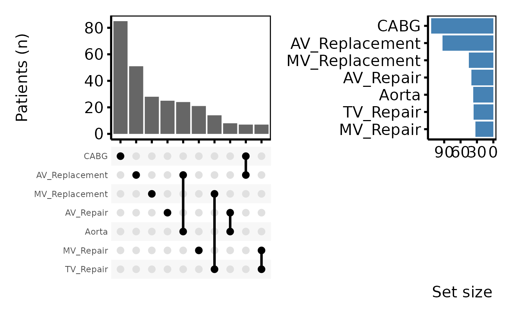

Draws an UpSet plot using scale_x_upset.
Arguments
- x
An
hv_upsetobject.- n_intersections
Number of intersections to display, ordered by
sort_by. Default10.- sort_by
How to order intersections:
"freq"(default, by frequency) or"degree"(by number of sets in each combination).- fill_col
Optional column name in
x$datato fill the intersection bars by (stacks bars by group). DefaultNULL(single colour, supplied viabar_fill).- bar_fill
Single fill colour for the intersection bars when
fill_colisNULL. Default"grey40".- set_size
Logical; if
TRUE(default), compose a set-size sidebar as a patchwork. IfFALSE, return only the intersection-bar ggplot.- set_size_position
"right"(default) or"left".- set_size_sort
Sort order for the sidebar:
"descending"(default),"ascending", or"none"(preserveintersectorder).- set_size_fill
Fill colour for the sidebar bars. Default
"steelblue".- width_ratio
Fraction of horizontal space given to the set-size sidebar (only used when
set_size = TRUE). Default0.3.- ...
Ignored; present for S3 consistency.
Value
A ggplot when set_size = FALSE (themes apply with +); a
patchwork composite when set_size = TRUE (default; themes apply
with & to cover all sub-panels).
Details
When set_size = TRUE (the default) the function composes a
patchwork of two plots: a horizontal set-size sidebar and the intersection
bar chart. Apply themes to all panels with patchwork's &
operator:
plot(up) & theme_hv_poster()Pass set_size = FALSE to get a single intersection-bar ggplot
for full customisation; themes then apply via +:
plot(up, set_size = FALSE) + theme_hv_poster()Examples
sets <- c("AV_Replacement", "AV_Repair", "MV_Replacement", "MV_Repair",
"TV_Repair", "Aorta", "CABG")
dta <- sample_upset_data(n = 300, seed = 42)
up <- hv_upset(dta, intersect = sets)
# Default: intersection bars + set-size sidebar (patchwork composite).
# Use `&` to theme every sub-panel.
plot(up) & theme_hv_poster()
#> Warning: Removed 30 rows containing non-finite outside the scale range (`stat_count()`).

if (FALSE) { # \dontrun{
# Intersection bars only — single ggplot, themes apply with `+`.
plot(up, set_size = FALSE) + theme_hv_poster()
# Fill bars by an external grouping variable (e.g. era).
dta$era <- ifelse(seq_len(nrow(dta)) <= 150, "Early", "Recent")
up_era <- hv_upset(dta, intersect = sets)
plot(up_era, fill_col = "era", set_size = FALSE) +
ggplot2::scale_fill_manual(
values = c(Early = "grey60", Recent = "steelblue"),
name = "Era"
) +
theme_hv_poster()
} # }